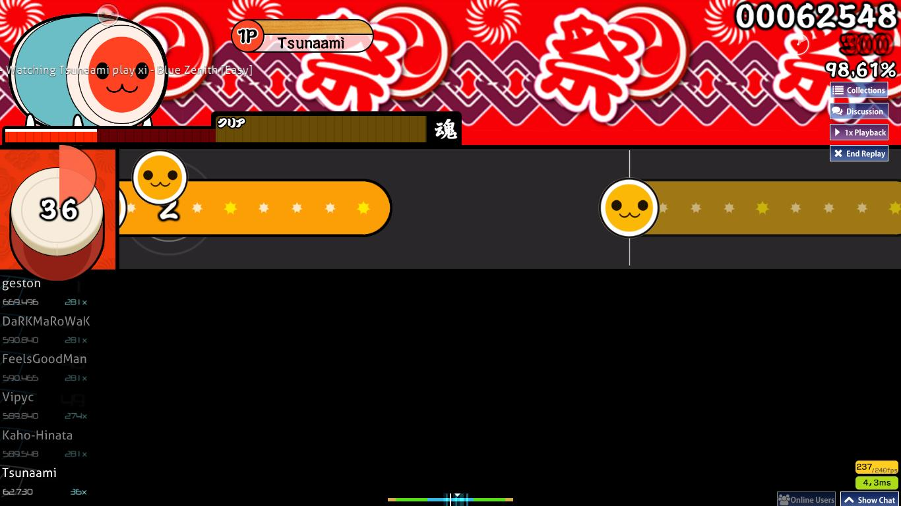
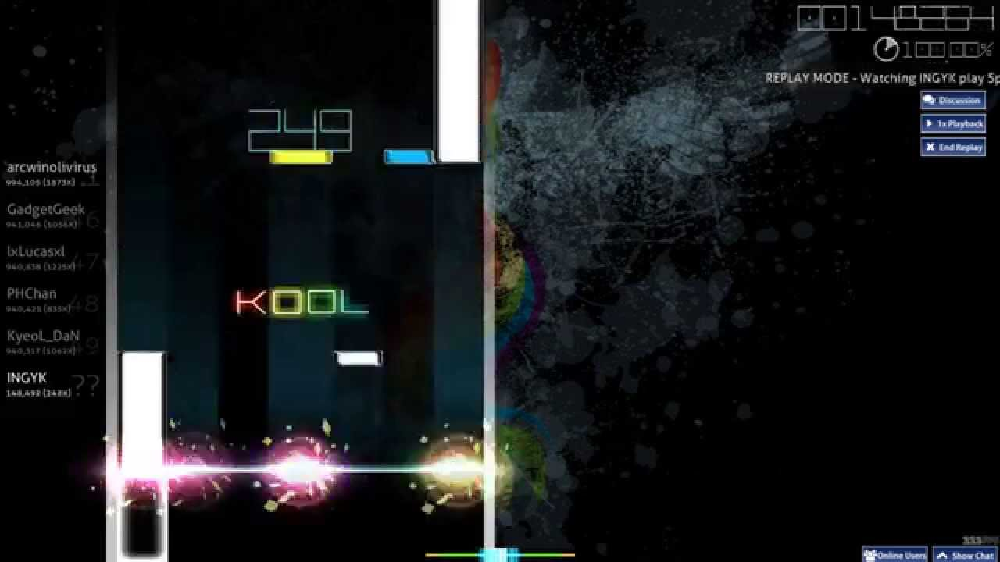
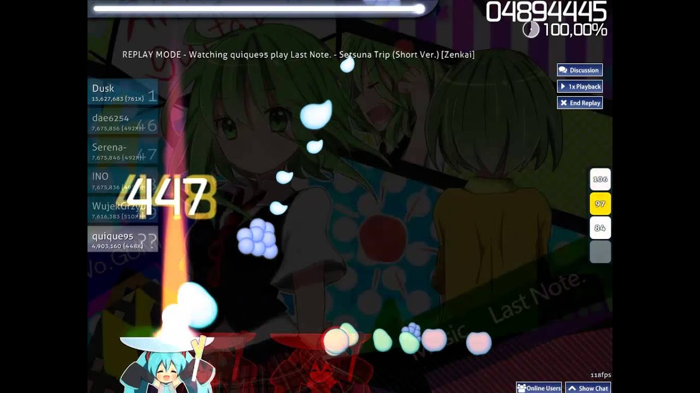

**********************************************************************************************************
First of all, all the modes that exist in osugame are different. For example, as mentioned
in overview, there are four separate modes with different mechanics. The four titles below demonstrate
the mechanics of the games and how to play them; including some information regarding the history of the game.
Although the four modes vary in a variety of stuff, the playstyle of each one of them is incredibly close. All
you need is a keyboard and mouse to play those games.

osu!standard
This is the most popular gamemode out of the four, it is basically the standard version of osu where explained priorly, it is clicking circles and timing the click correctly. The most

osu!taiko
This version of osu is out of the japanese game "taiko" but on a computer instead of playing it on a drums, you do it on a keyboard, by binding Z and X to click.

osu!mania
This version of osu is like the mobile game Arcaea, a rhythm game where you click tiles that appears on the screen fast.

osu!ctb
Also known as catchthebeat, this is one of the most popular japanese minigames since the 20th centuary. osu!ctb is a budget version of the real japanese catchthebeat